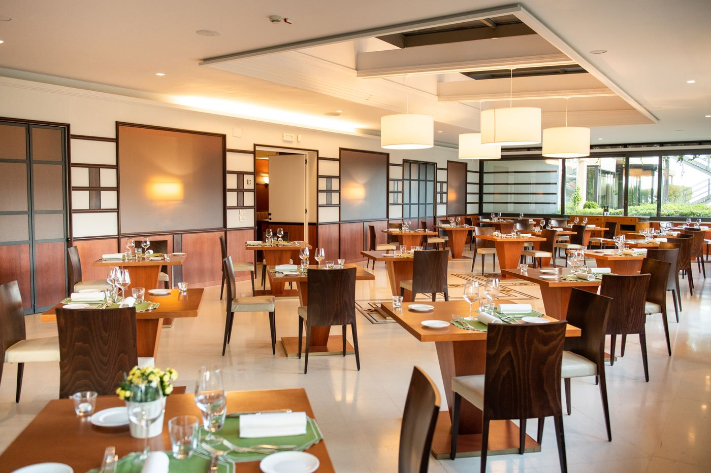
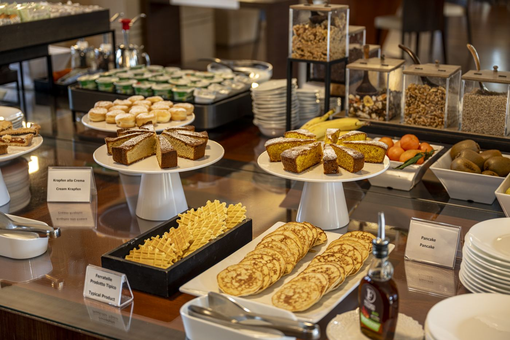
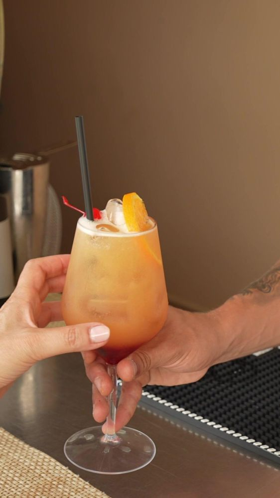
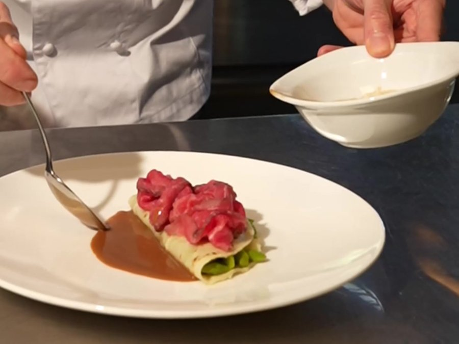

1 / 3
Sala
Il ristorante
Cucina italiana à la carte e specialità abruzzesi, con vista su piscina e parco.

Ristorante
Ricette locali, cene lunghe e una colazione per cui vale la pena alzarsi.

Mattina

Sera

Cena

Sala
Prenota un tavolo
Per orari, menu e prenotazioni, contatta la reception.
Il ristorante
Il ristorante guarda il parco secolare dell’hotel, con una terrazza vista mare per le serate d’estate e gli eventi. La cucina propone piatti italiani e specialità abruzzesi con prodotti locali, dalla colazione alla cena.
Colazione 7:00–10:00 al piano terra, e in terrazza nei mesi più caldi. Pranzo 12:30–14:00, cena 19:30–22:00. Il bar è aperto dalle 10:00 alle 23:00. Gli orari possono cambiare con la stagione.
Un buffet con frutta fresca, torte, dolci e piatti salati, incluso nei pacchetti. Chi viaggia per lavoro può farla presto, prima della prima call.
Cucina italiana à la carte e specialità abruzzesi, servite in sala o in terrazza. Lunghe cene in famiglia e cene di lavoro tranquille hanno entrambe il loro posto.
Per una serata speciale, o la cena dopo una partita di padel, la tavola dello chef è dove le conversazioni durano e nascono gli accordi.
La terrazza vista mare ospita aperitivi, feste ed eventi. Chiedici una cena privata o una festa per il tuo gruppo.
Il lido convenzionato in spiaggia ha il suo bar e ristorante per pranzi sulla sabbia e serate d’estate. Più a sud, lungo la Costa dei Trabocchi, le antiche macchine da pesca sul mare servono piatti di pesce come il brodetto: chiedici di prenotare un tavolo.
Il nostro angolo di prodotti locali e sapori abruzzesi, da gustare durante il soggiorno e da portare un po’ a casa.
Segnalaci allergie o diete quando prenoti, o scrivici un messaggio. Per prenotare un tavolo chiama il +39 085 45 00 51.
Galleria
Sala
Cucina italiana à la carte e specialità abruzzesi, con vista su piscina e parco.
Mattina
Buffet locale con frutta, dolci e salato, servito presto per chi lavora.
Sera
L’Abruzzo nel piatto, per serate speciali e cene che chiudono l’accordo.
Bar
Un drink prima di cena: il brindisi dopo la partita o l’inizio di una serata in famiglia.
All’aperto
Pranzi all’ombra e cene con la brezza del mare.
Domande frequenti
La colazione è inclusa nei pacchetti ed è servita a buffet dalle 7:00 alle 10:00, in terrazza nei mesi più caldi. Il pranzo è dalle 12:30 alle 14:00 e la cena dalle 19:30 alle 22:00.
Sulla collina sopra Francavilla al Mare, in Abruzzo, a 5 km dal centro di Pescara. Chieti, Pescara e l'Aeroporto Internazionale d'Abruzzo sono a circa 15 minuti, la stazione di Pescara Centrale ha comodi collegamenti e l'uscita A14 Pescara Sud è vicina.
Sì. Il parcheggio all’aperto è gratuito per gli ospiti e ha colonnine di ricarica per auto elettriche.
Hai il pacchetto esattamente come progettato, una persona vera prima e durante il soggiorno ed extra che non trovi sui portali, come il buono di benvenuto da 50 € (codice FAMILY50) per la tua prossima prenotazione diretta.